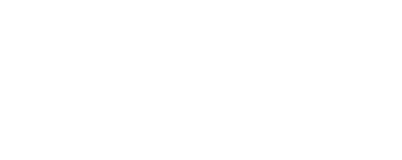
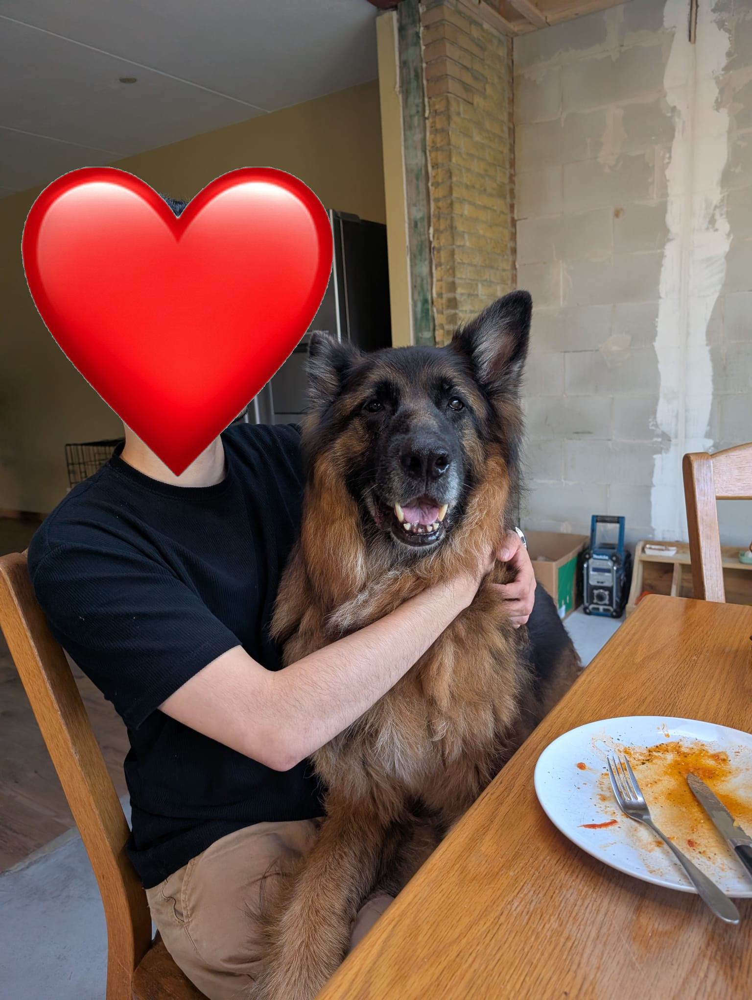
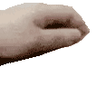

Territory of Lobotomiss


Homepage
About myself
Why make this website?
I am but a fool, a stupid idiot, trying to become a smart idiot! This website will
try to document that journey.
I will also use it to spit my interests and rants at you if you are willing to read it :)
Who even am I?
A great question that humanity has pondered over the ages. Cogito ergo sum as they say! With that I will say that I am yet another soul (like you dear reader) with their own internal ego and self perceptions, and as such i think it is most important you make your own opinion about me (It's your human right, so you better use it!). Now to cut the boring monologuing short. I am Lobotomiss/Pineapple (I am currently deciding to not attach any names since i put this stuff on the interwebs), I am 24F, and my hobby's tend to sit on the geeky sides of things. Think things like D&D and video/board games. I have also taken up boulderen (climbing but fancy) and shooting, and I am also trying out calisthenics to hopefully get some muscle on my noodly arms. I also may yap a lot but don't be deceived, at the end of the day I do think people can be a bit scary, so please don't be afraid to talk to me because I am probably as scared as you if not more scared.
Study History
It all started when I was born! Just kidding, i'm not going that far back. However, after finishing my admidately shitty middle school, I studied Forensic Lab Research on the van Hall Larenstein where I have learned Tactical Forensics like different crimescene analysis branches, Microbiological Forensics like basic petridish analysis and DNA research, Analytical chemistry and lastly a little bit about Dutch law, all both practical an theory. I have focussed myself mostly on analytical chemistry with an extra interrest in Toxicology, Coding and automation (although the coding and automation went mostly on the background during my internships). After working at Eurofins Heerenveen for a while I had some medical issues caused by the lab work and I decided to follow my interests in IT instead and that is why I now study at the HU. I hope to learn more about servers, coding/softwaredevelopment, cybersecurity and a touch of AI model training.
Silly facts about myself
Things I wanna add 02-09-2026
Please be patient, I'm just a whitle goy.

Updates
Allas, this website has not lauched yet.
In development since 11-7-2026
added basic features:
Further developed on 02-09-2026
planned features: